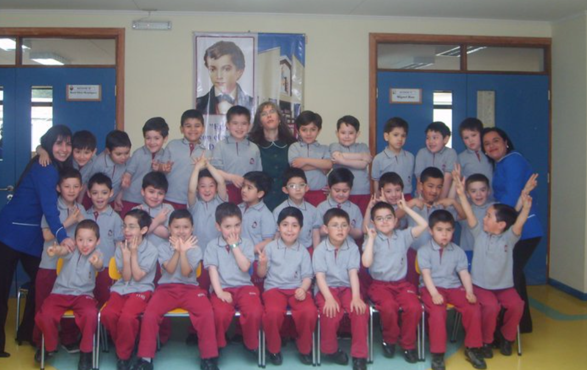
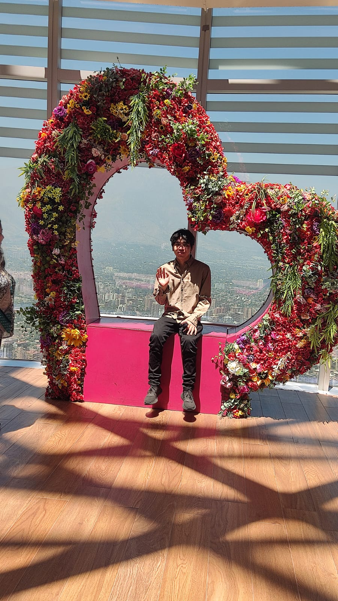

En esta sección comparto material audiovisual que resume momentos importantes y actividades que disfruto. Las imágenes están acompañadas por descripciones para contextualizarlas.
Tocando en la orquesta del teatro municipalTocando en el centro cultural con dos amigas violinistas.17 de diciembre de 2022: Tocando en un concierto.

Foto de kinder (2010)

Viaje a Santiago (2024)